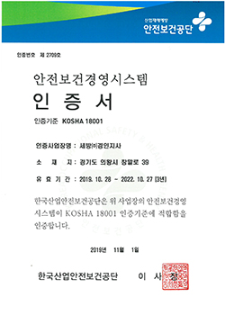
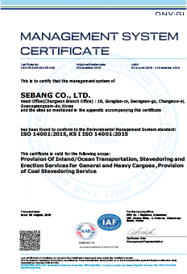
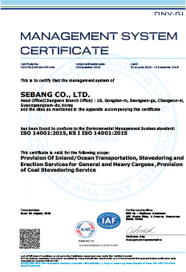

home > 고객지원 > 인증자료
인증자료
종합물류
종합물류기업인증제도는 물류정책기본법에 근거하여 설립된 정부의 물류전문기업 육성방안의 대표적인 정책 중 하나, 기능별 물류위주의 국내물류기업 구조를 종합적 서비스를 제공하는 종합물류기업화하기 위한 인증.AEO
세관당국이 신뢰성, 안전성을 갖췄다고 공인한 화주, 운송인, 창고업자 등 화물이동과 관련된 물류주체를 의미. 당사는 보세운송업자, 보세운송구역운영인, 하역업자 3개 부문에서 AEO 인증을 취득함.안전보건
산업안전보건법에 따른 위험기계·기구 및 방호장치·보호구에 대한 KCs 안전인증과 법령규정 외의 산업용 기계·기구 및 부품 등에 대한 S마크 안전인증 업무를 수행하며 제품의 성능 및 품질과 안전성이 근원적으로 확보된 제품을 제조·유통·사용되도록 하는 역할을 수행하고 있습니다.


품질환경
산업안전보건법에 따른 위험기계·기구 및 방호장치·보호구에 대한 KCs 안전인증과 법령규정 외의 산업용 기계·기구 및 부품 등에 대한 S마크 안전인증 업무를 수행하며 제품의 성능 및 품질과 안전성이 근원적으로 확보된 제품을 제조·유통·사용되도록 하는 역할을 수행하고 있습니다. 

서비스품질
서비스업을 대상으로 하는 인증으로 기업 및 기관의 전반적 서비스품질 수준을 진단하고 개선방향을 제시하며 그 성과가 탁월한 기업 또는 기관에게 인증하여 널리 공표함으로써 기업경쟁력 제고 및 고객 신뢰도 및 만족도 상승 도모
우수녹색물류실천기업
- 목적 : 친환경물류 활동을 확산하기 위해 에너지 및 온실가스 감축효과 등이 우수한 기업을 “우수녹색물류실천기업”지정
- 지정절차 : 지정심사단의 심사를 거쳐 녹색물류협의기구에서 지정여부를 결정하고, 국토교통부 장관이 지정서 발급
- 인센티브 : 복합물류터미널 등 물류시설 우선 입주, 자금 융자 및 부지확보 지원, 녹색물류전환사업 우선 지원 지정